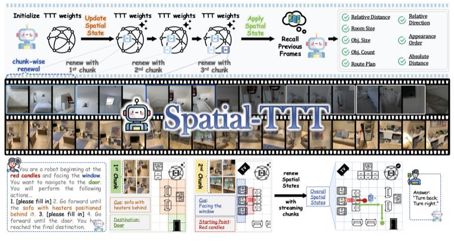
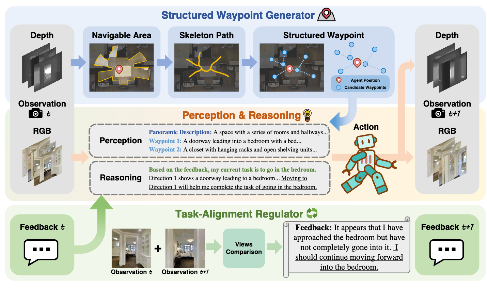
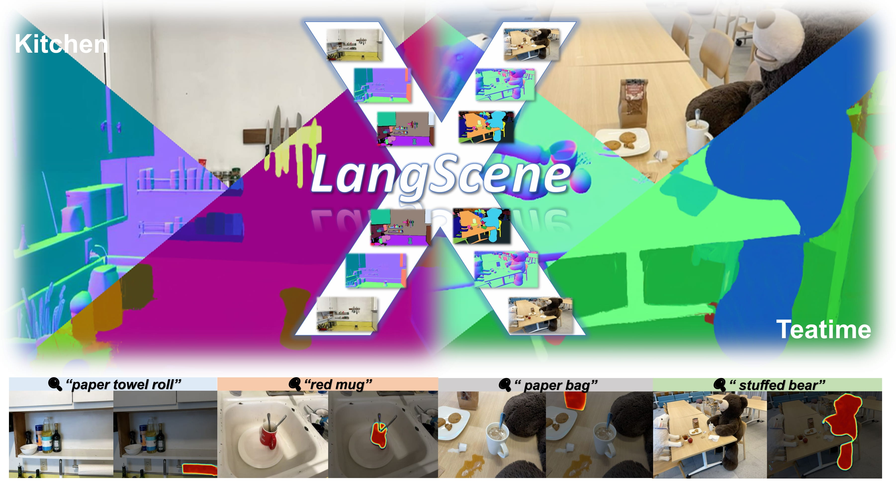
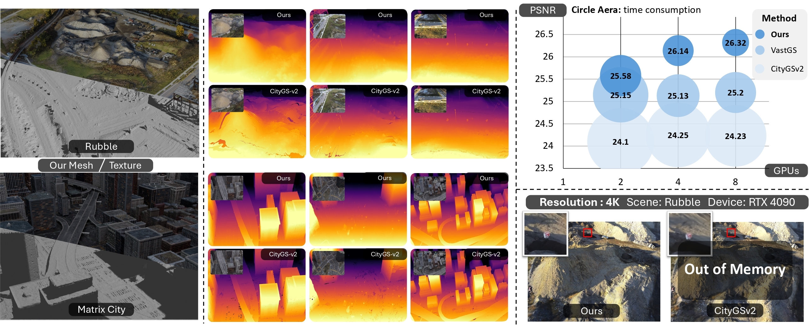
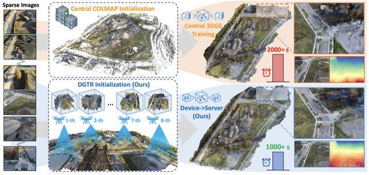
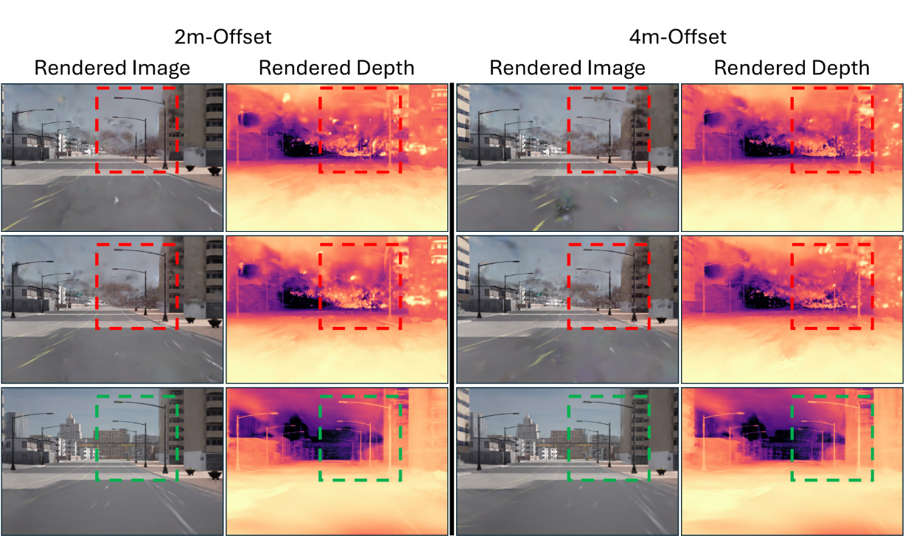
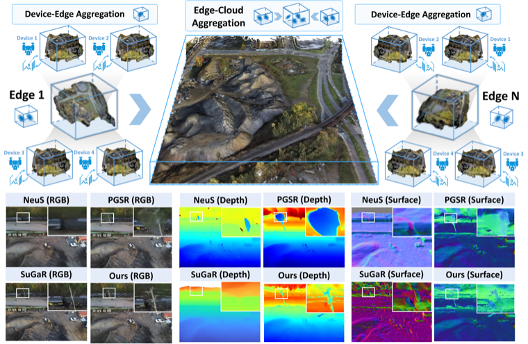
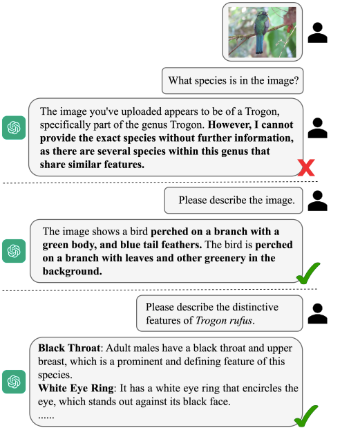
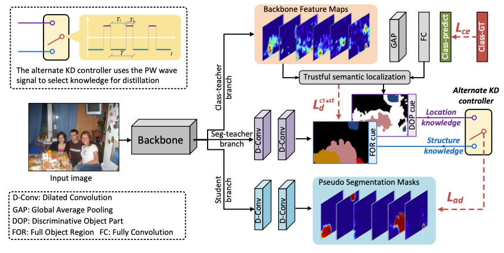
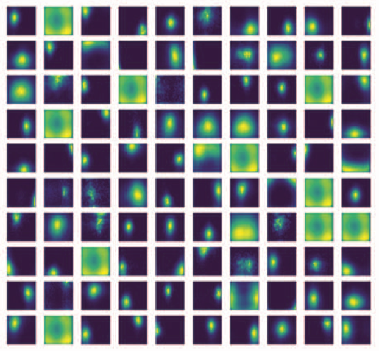

Hao Li (Leo Li)
3D Vision · Embodied AI · Multi-Modal Models
Research Scientist, Ropedia, Inc.
Advised by Prof. Ziwei Liu
Biography
I am a Research Scientist at Ropedia, Inc., advised by Prof. Ziwei Liu, following my visiting period at MMLab, Nanyang Technological University (NTU). I am also a Ph.D. student (2022–now) in the School of Automation at Northwestern Polytechnical University (NPU), supervised by Prof. Dingwen Zhang and Prof. Junwei Han (IEEE Fellow).
My research interests lie in 3D Vision, Embodied AI, and Multi-Modal Models.
Before that, I was a Research Intern at the LongCat Group, Meituan, Inc. (北斗人才计划), advised by Dr. Manyuan Zhang. I also worked as a research intern at StepFun Inc., led by Xuanyang Zhang and Dr. Gang Yu. From 2023 to 2024, I worked as a research intern at the Robotics Team, ByteDance AI Lab, under the mentorship of Minghan Qin. I also interned with the VIS at Baidu Inc., guided by Dr. Chenming Wu and Jingdong Wang (IEEE Fellow). In 2022 to 2023, I was a research intern at Zhejiang Lab, leading with Prof. Lechao Cheng.

News
Publications
Bold = me · † equal contribution · # corresponding author · Project Lead · Oral / Highlight selected for presentation · 🤗 HF Daily Paper featured on Hugging Face



EgoTools: Benchmarking Physical Logic and Tool Affordances in Egocentric Videos









Unsupervised Pre-training with Language-Vision Prompts for Low-Data Instance Segmentation
V2A-GS: End to End Reconstruction of Articulated Objects from Video Sequences

Boosting Low-Data Instance Segmentation by Unsupervised Pre-training with Saliency Prompt
Talks
- 可泛化3DGS的现状和未来 (GAMES Webinar)
- 可泛化语义NeRF (3D视觉工坊)
Honors and Awards
- Outstanding Students (First Grade) in Northwestern Polytechnical University, 2024.
- Outstanding Interns in Baidu Inc., 2023.
- 2nd in International Algorithm Case Competition, 2022.
- Finalist Winner (2%) in International Mathematical Contest in Modeling (MCM), 2021.